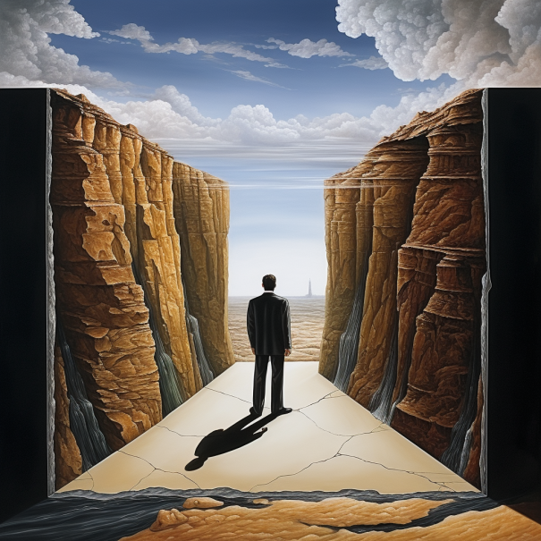

표현 목록
-
Punch Line
비즈니스에서 "펀치라인"이란 제품, 서비스, 또는 브랜드 자체의 본질을 잡아내는 기억에 남는 문구나 문장을 의미합니다.
-
Heartbreaker
"Heartbreaker"는 영어에서 사용되는 표현으로, 긍정적이지 않은 의미를 갖습니다.
-
I Got Your Back
'I got your back'는 '나는 너를 도와줄게' 또는 '나는 너를 지지하고 뒷받침할게'라는 의미의 표현입니다.

-
Square Away
"Square away"는 영어에서 사용되는 구어 표현으로, 무언가를 마무리하거나 정리하고 준비하는 것을 의미합니다.

-
Call Out
"Square away"는 영어에서 사용되는 구어 표현으로, 무언가를 마무리하거나 정리하고 준비하는 것을 의미합니다.

-
Malleable

-
Buy off
buy-off는 우리말로 승인하다, 확인하다 정도의 뜻입니다.
- Pick on
"Pick on someone"은 누군가를 지적하거나 비난하는 것을 뜻합니다.
-
Cadence
'Cadence'는 일정한 리듬이나 속도 의미입니다.

-
Flesh out
"Flesh out"은 영어에서 "상세히 설명하다" 또는 "자세히 계획하다"라는 의미의 구어 표현입니다.

-
I am not going to sweat it
"I am not gonna to sweat it"은 영어에서 사용되는 구어 표현으로, '걱정하지 않을 것이다', '너무 신경 쓰지 않을 것이다', '너무 걱정하지 않을 것이다' 등과 유사한 의미를 가지고 있습니다.

-
Cobble together
'cobble together'는 '여러 가지를 모아서 서투르게 만들다'라는 의미의 표현입니다.

-
Balm
"밤(balm)"은 일반적으로 피부에 바르는 제품으로, 주로 피부를 진정시키거나 보호하는데 사용됩니다.

-
Reconcile
"Reconcile"은 다양한 맥락에서 사용되는 동사로, 주로 두 가지 다른 것 또는 개념을 조정하거나 조화시키는 행위를 의미합니다.

-
Musical chairs
비즈니스에서 'musical chairs'는 보통 조직 내부의 잦은 인사 움직임을 비유적으로 이르는 말로 사용됩니다
-
Caveat
caveat는 '주의사항'이나 '유보사항'을 뜻하는 말입니다.

-
Rhetorical question
"Rhetorical question"은 답변이나 정보를 얻기 위해 묻는 것이 아니라, 주장을 강조하거나 문장의 효과를 내기 위해 사용되는 종류의 질문입니다.

-
Rat hole
비즈니스 또는 투자의 맥락에서 "rathole"은 돈이나 자원이 낭비되는 상황을 가리키는 비유적인 표현입니다.
-
Goofy to me
"A little goofy to me"는 비격식적인 영어 표현으로, 누군가나 무언가가 약간 우스꽝스럽거나 웃긴 느낌을 주는 것을 나타냅니다.
-
Potato quality
"Potato quality"는 영어에서 사용되는 비격식적인 표현으로, 사진, 비디오 또는 기타 미디어 콘텐츠의 품질이 매우 낮거나 부족한 상태를 묘사하는 용어입니다.

-
Gibber
'gibber'는 '무의미한 말을 더듬거리다'는 뜻이 있고, 이를 바탕으로 한 gibberish는 혼란스러운 말이나 문장을 뜻하는 말입니다.

-
Personal privilege

-
Under the bus
"Throw under the bus"는 영어 표현으로, 누군가를 어려운 상황에서 혼자 책임을 지도록 내몰거나 희생시키는 것을 의미합니다.
-
Head start
'a head start'는 '선취약점을 가지다'라는 의미의 표현입니다. 보통 경쟁 상황에서 한쪽이 상대방에 비해 앞서 있는 위치나 이점을 뜻합니다.

-
Trolling
인터넷에서 사용되는 용어로, 다른 사람들을 고의적으로 성가시게 하거나 분노를 유발하는 행동을 가리킵니다.